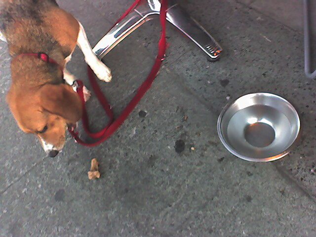

<--Previous Up

Celebration dinner
Later that night, Huxley celebrated by dining at Garçon, a French restaurant near our house that has a few sidewalk tables. The chef gave Hux a couple of lamb bones. This place shot straight to the top of Hux's list of favorites!